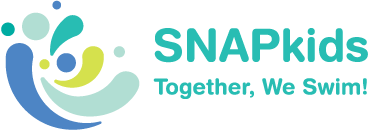
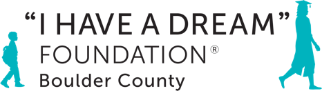

Long before I was interested in research, I fell in love with teaching. I love being in the classroom, and I firmly believe my time spent as a teacher has made me both a better researcher and a better person. Below are some of my most important teaching experiences.
Mokpo High School (목포고등학교), Mokpo, South Korea
I teach conversational English to 300 first and second year high school students in Mokpo, South Korea. In addition, I lead 6 different club classes: 2 advanced English career clubs, one regular English conversation club, an American film and music club, an Australian Exchange class, and an English teacher’s workshop.
Stanford University
I taught a section of 8-13 Stanford students in beginning and intermediate programming skills in python and C++ once a week. I also debugged code for 2 hours a week and gave feedback in interactive, one-on-one grading sessions. I served as a TA for 6 quarters.
Special Needs Aquatics Program (SNAP), Palo Alto, California
For 4 years, I taught swim lessons to children with physical and neurological disabilities and eventually became a head instructor at the Palo Alto branch for SNAP kids. I was also the Stanford lead volunteer and would organize carpools and mini events.

I Have a Dream Foundation, Boulder, Colorado
I served as both a summer school tutor and community center worker for one summer supporting 30 students between 4th and 6th grade. In this role, I organized field trips and taught curriculum in English, math, and social emotional skills.

Breakthrough Collaborative, Austin, Texas
I virtually co-taught a class of 12 students during the pandemic. Our curriculum was all about social justice and Critical Race Theory since Texas public schools banned teaching these social theories in the classroom. I also led an elective on game design.